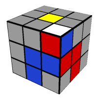

A brief introduction about F2l… It is a part of CFOP which is a speed solving method used by majority of speed cubers around the globe. The desired output after F2L is you get your first and second layers solved simultaneously. Any F2L case can be divided into three categories which are as follows.
When white colour of the corner piece is not on top and both top colours of corner and edge pieces are different. This is the standard recognition of F2L Case 1.
The standard method to solve F2L case 1 is just match the corner piece with its corresponding edge piece in the top layer. The prerequisite to apply this method is that the edge should not be in the layer which is directly opposite to the white sticker of corner. After following the stated procedure the you will be able to see the solved F2L pair and just insert it into the slot between its corresponding centres.
When white sticker of the corner is not facing on top but the top colours of both corner and its corresponding edge are same. This is the standard recognition for F2L Case 2.
The standard method to solve this case is to hide the corner from the sticker which is not white and bring the corresponding edge just adjacent to the position from the hidden corner. And when you again bring the corner up i.e. in the top layer you will directly see the pair ready. Again you just have to insert the pair in the corresponding slot.
When white sticker is facing on top.This is the standard recognition for F2L Case 3.This is one of the easiest F2L Cases to recognize and implement.

The standard procedure to solve F2L case 3 is that match the edge with its corresponding centre and turn it towards the centre which has opposite colour that of the top colour of that particular edge and then bring the corner above and edge and then move the pair back. Now you have your F2L pair ready just insert it into its corresponding slot.